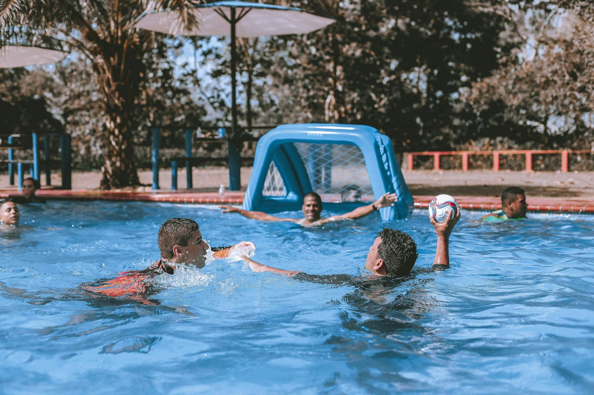

Florida's 2026 Water Polo State Championships Are on the Horizon
The Florida High School Athletic Association (FHSAA) has officially released its Know Before You Go guide for the 2026 Water Polo State Championships, signaling that the most competitive stage in Florida high school aquatic sports is closer than many families might realize. For young athletes in Wesley Chapel, Land O' Lakes, and across the greater Tampa Bay area, this is the kind of news worth circling on the calendar.
Whether your athlete is currently playing on a high school roster, training with a club program, or just beginning to fall in love with the sport, understanding how the state championship process works can help your entire family plan ahead — and dream bigger.
Why State Championships Matter Beyond the Trophy
State-level competition is about far more than hardware and highlight reels. For players who earn a spot at the championships, the experience represents the culmination of years of early-morning practices, weekend tournaments, and the kind of team bonding that simply cannot be manufactured. It is the moment when all of that preparation meets its greatest test.
For younger athletes who are not yet competing at the high school level, watching or learning about the state championships serves a different but equally important purpose — it gives them a vision of what is possible. Seeing elite young players compete at the highest level of Florida high school sports can be a powerful motivator for the seven-, eight-, and nine-year-olds just now learning to tread water and throw a ball at the same time.
What the FHSAA Guide Covers
The FHSAA's official guide is designed to help athletes, coaches, and families arrive prepared and focused. While full details are available directly through the FHSAA, here are the key areas the guide typically addresses:
- Event dates and venue information so families can book travel and accommodations early
- Admission policies and ticketing procedures to avoid any surprises at the gate
- Warmup and competition schedules so athletes know exactly when they need to be in the water
- Equipment and uniform regulations that must be followed for compliance
- Parking, accessibility, and facility guidelines for a smooth game-day experience
Taking the time to review this guide as a family — not just as a coaching staff — ensures that nothing logistical gets in the way of an athlete's mental preparation and performance.
Building Toward That Stage Right Here in Tampa Bay
The path to the state championships begins long before a young athlete steps onto a high school roster. It is built in club pools, through consistent coaching, and inside the kind of supportive training environment that challenges players while keeping the joy of the sport alive.
At Nexar Aquatic Academy, based in Wesley Chapel and Land O' Lakes, young athletes develop the foundational water polo and swimming skills that make high-level competition not just a dream but a realistic goal. Programs are designed to meet athletes where they are — whether they are brand new to the water or already competing at a regional level — and grow with them over time.
Start Preparing Now, Not Later
For families in the Tampa Bay area, this is the ideal time to evaluate where your young athlete stands and what they need to reach their next milestone. State championships do not happen by accident. They happen because of intentional, year-round development.
Nexar Aquatic Academy encourages every family with a water polo or swimming enthusiast at home to connect with a coach, ask questions, and start building the roadmap that leads to moments like the 2026 FHSAA State Championships. The water is waiting — and so is the opportunity.
Ready to get in the water?
First practice is completely FREE — no commitment needed.